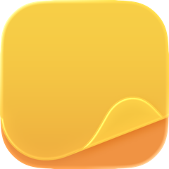
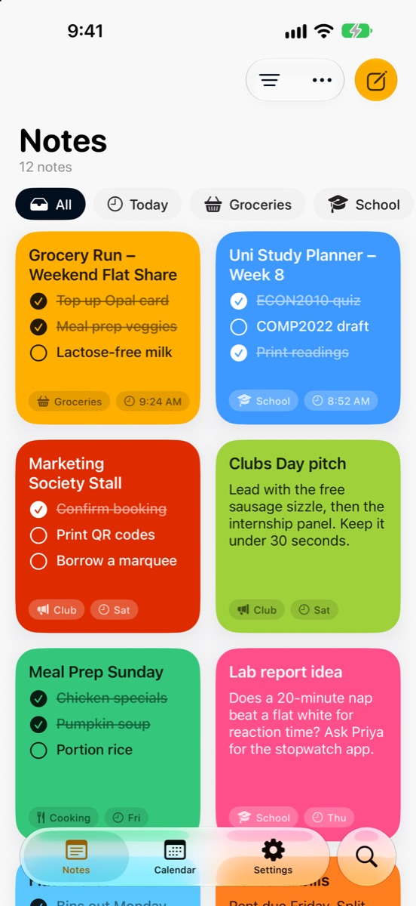
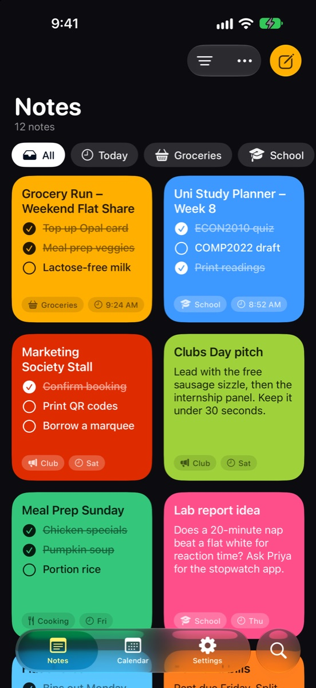

Sticky Notes
Notes and to-dos that stick.
Jot it down, turn it into a checklist, and keep it on your Home Screen. Made for iPhone, iPhone Duo and iPad.
Download on the App Store

Everything a note needs.
Nothing it doesn't.
Simple to start, quick to find, and always where you left it.
Dash checklists
Start a line with a dash and it becomes a checklist you can tick off.
Tags and colors
Give every note a color and a tag, then filter to what matters right now.
Calendar
See each day's notes. On devices with Apple Intelligence, Day Highlight sums up your day, right on your device.
Widgets
Home Screen and Lock Screen widgets, with checklists you can tick without opening the app.
iCloud sync
Your notes stay in your private iCloud and follow you to every device.
iPad and iPhone Duo
Notes and the editor side by side on big screens, split right along the Duo's fold.
Support
Answers to common questions, and a real person when you need one.
How do I make a checklist?
Start a line with a dash (-) followed by a space. Each dash line becomes a checklist item you can tick off in the note or in a widget.
How many notes can I make for free?
The free version holds 5 notes and 2 archived notes. When you reach the limit, the app tells you. Sticky Notes Pro removes the limits and unlocks extra features.
My notes aren't syncing.
Make sure you're signed in to iCloud on each device and that iCloud is turned on for Sticky Notes. In the app, Settings › iCloud Sync shows the current sync status.
How do I restore my purchase?
Open the Pro screen in the app and tap Restore. Use the same Apple Account you bought Pro with.
How do I add a widget?
Touch and hold your Home Screen, tap Edit, then Add Widget, and search for Sticky Notes.
Still need help? Email us and we'll get back to you.
Email dynomite.app@gmail.com